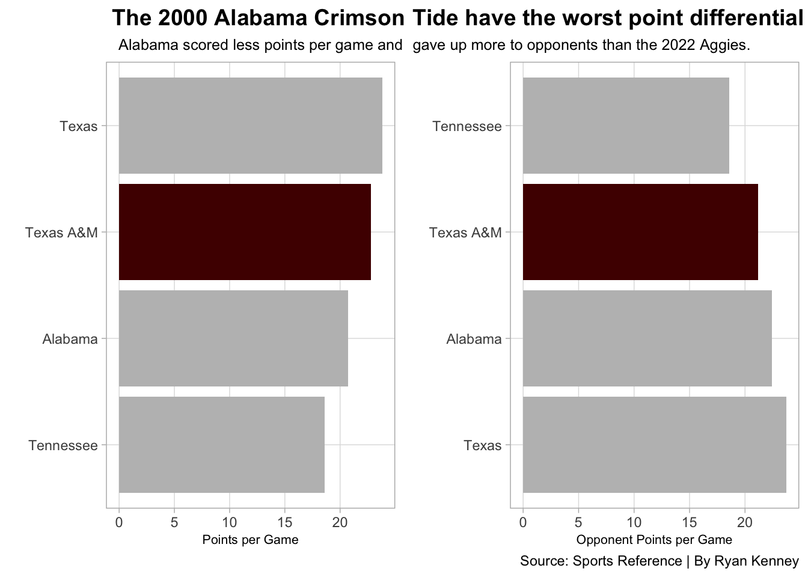

Did Texas A&M have the most disappointing college football season of the 2000s?
CFB
code
analysis
Author
Ryan Kenney
Published
December 4, 2022
Texas A&M is making all kinds of college football history in 2022. It’s not the good kind of history, though.
Expectations were high for this Aggies team heading into the season. It had just brought in the top recruiting class in the nation for not just 2022 but as long as recruiting class rankings have been around, according to 247 Sports recruiting rankings. You would think a team coming off an 8-4 season that adds the best (measured) recruiting class of all time would be pretty good, right? The voters of the AP Poll seemed to think so, ranking the Aggies No. 6 in the preseason. Boy, were they and pretty much everyone else wrong.
Texas A&M finished the 2022 season with a measly 5-7 overall record and 2-6 record in the SEC Conference. The Aggies did what they could to salvage a 3-7 start, ending the season with a win over 1-11 UMass and a more impressive win over No. 16 LSU. So, what went wrong? Is it a coaching issue? Head coach Jimbo Fisher has been able to bring in the talent but not capitalize with nearly as many wins as expected. Aggies fans hope coaching isn’t the issue, as Fisher currently has the most expensive fully guaranteed contract in college football history, good through 2031. A buyout after this disappointing season would cost nearly $86 million.
Texas A&M’s downfall this season was really bad; there’s no arguing that. Was it the worst college football collapse of the 2000s? To find out, I compiled a list of 40 other college football teams since 2000 that have marked by experts as the most disappointing. All of these teams were rated in the preseason AP top 25 and had high expectations crushed by a poor record, embarrassing loss or a variety of other factors.
A differentiating aspect of this year’s Texas A&M team is its failure to qualify for a bowl game. To qualify, a team must have at least six wins and a winning percentage of .500. Let’s take a look at the Aggies next to the 13 other teams on this list who missed that mark, comparing final record and simple rating. Simple rating, provided by Sports Reference, takes into account both strength of schedule and average point differential. An average team has a simple rating of zero, with the higher rating the better.
How does 2022 Texas A&M compare to the other biggest busts?
The Aggies had the fourth-highest preseason ranking of this group of teams. They finished in the middle of the pack in simple rating and tied for the most total wins.
School
Season
Preseason Ranking
Wins
Losses
Simple Rating
Alabama
2000
3
3
8
1.04
Tennessee
2005
3
5
6
4.25
Texas
2010
5
5
7
1.71
Texas A&M
2022
6
5
7
3.31
Penn State
2020
7
4
5
4.22
Auburn
2008
10
5
7
1.26
Arkansas
2012
10
4
8
2.40
Florida
2013
10
4
8
4.67
Notre Dame
2016
10
4
8
4.27
Oregon State
2001
11
5
6
3.16
Michigan State
2016
12
3
9
-1.79
Kansas State
2004
13
4
7
2.04
Northwestern
2001
16
4
7
-1.01
Mississippi State
2001
20
3
8
1.65
By: Ryan Kenney | Source: Sports Reference
Looking at the initial list of 41 teams, the median number of wins is seven, the average simple rating is 6.876341 and the median preseason ranking was eight. Therefore, I narrowed the list down to only the teams that met the following criteria:
This leaves us with the 2000 Alabama Crimson Tide, 2005 Tennessee Volunteers, 2010 Texas Longhorns, 2020 Penn State Nittany Lions and, of course, the 2022 Texas A&M Aggies.
Ah. Just like any good college football playoff, there’s four spots and more than four teams with an argument for making it. Luckily, it’s not too difficult to pick the team that gets left out here. Sorry 2020 Penn State, you don’t get to be in the final running for most disappointing college football team of the 2000s. A shortened season amidst the COVID-19 pandemic robbed the Nittany Lions of three regular season games. Plus, the other four teams have the highest preseason ranking of any of the teams in this list that missed a bowl game, meaning their collapses were more likely to be the most devastating.
Code
alabama2000 <- disappointments %>%filter(Team =="Alabama", Season =="2000")tennessee2005 <- disappointments %>%filter(Team =="Tennessee", Season =="2005")texas2010 <- disappointments %>%filter(Team =="Texas", Season =="2010")texasam2022 <- disappointments %>%filter(Team =="Texas A&M", Season =="2022")playoffteams <-bind_rows(alabama2000, tennessee2005, texas2010, texasam2022)ggplot() +geom_point(data=disappointments, aes(x=SRS, y=SOS, size=W), color="black", alpha=.3) +geom_point(data=disappointments, aes(x=SRS, y=SOS, size=W), color="gray") +geom_point(data=alabama2000, aes(x=SRS, y=SOS, size=W), color="#9E1B32") +geom_point(data=tennessee2005, aes(x=SRS, y=SOS, size=W), color="#FF8200") +geom_point(data=texas2010, aes(x=SRS, y=SOS, size=W), color="#BF5700") +geom_point(data=texasam2022, aes(x=SRS, y=SOS, size=W), color="#500000") +geom_vline(xintercept =6.876341) +geom_hline(yintercept =4.464634) +geom_text(aes(x=11.5, y=9, label="Good SRS, Good SOS"), color="blue") +geom_text(aes(x=1, y=0, label="Bad SRS, Bad SOS"), color="blue") +geom_text_repel(data=playoffteams, aes(x=SRS, y=SOS, label=Team) ) +labs(x="Simple Rating", y="Strength of Schedule", title="2000 Alabama did not win or play close often", subtitle="The 2000 Crimson Tide had three wins and the lowest simple rating of the four teams in question.", caption="Source: Sports Reference | By Ryan Kenney",size="Wins" ) +theme_light() +theme(plot.title =element_text(size =16, face ="bold"),axis.title =element_text(size =8),plot.subtitle =element_text(size =10),panel.grid.minor =element_blank() )
It’s hard to make a call on the worst of the bunch based on this plot alone. However, the 2000 Alabama Crimson Tide do stand out as a front-runner in the race. The Crimson Tide scored the lowest simple rating of the four finalists. This means it not only won just three games, but it also didn’t play very closely in their losses or blowout the opponent in its wins often, if at all.
Let’s take a deeper look at these four teams by the numbers, comparing them on both sides of the ball by displaying offensive points per game and opponent points per game in their respective seasons.
Code
bar1 <-ggplot() +geom_bar(data=playoffteams, aes(x=reorder(Team, Off), weight=Off), fill="grey") +geom_bar(data=texasam2022, aes(x=reorder(Team, Off), weight=Off), fill="#500000") +coord_flip() +labs(title=" The 2000 Alabama Crimson", subtitle =" Alabama scored less points per game and", x="", y="Points per Game", caption ="") +theme_light() +theme(plot.title =element_text(size =14, face ="bold"),axis.title =element_text(size =8), plot.subtitle =element_text(size=9.5), panel.grid.minor =element_blank(),plot.title.position ="panel" )bar2 <-ggplot() +geom_bar(data=playoffteams, aes(x=reorder(Team, desc(Def)), weight=Def), fill="grey") +geom_bar(data=texasam2022, aes(x=reorder(Team, desc(Def)), weight=Def), fill="#500000") +coord_flip() +labs(title ="Tide have the worst point differential", subtitle="gave up more to opponents than the 2022 Aggies.", x="", y="Opponent Points per Game", caption="Source: Sports Reference | By Ryan Kenney") +theme_light() +theme(plot.title =element_text(size =14, face ="bold"),axis.title =element_text(size =8), plot.subtitle =element_text(size=9.5), panel.grid.minor =element_blank(),plot.title.position ="plot" )plot_grid(bar1, bar2)

The 2005 Tennessee Volunteers scored the least points of the bunch, but they also gave up the least. The 2010 Texas Longhorns did the opposite, scoring the most points but also giving up the most. That leaves 2022 Texas A&M as the second-best offense and defense and 2000 Alabama as the third-best offense and defense.
Before determining the biggest college football disappointment of the 2000s, let’s take a final look at the four finalists next to each other.
Code
playoff <- playoffteams %>%mutate(PtDiff = Off-Def ) %>%select(Team,AP.Pre,W,L,SRS,PtDiff)playoff %>%gt() %>%cols_label(Team ="School",AP.Pre ="Preseason Ranking",W ="Wins",L ="Losses",SRS ="Simple Rating",PtDiff ="Point Differential" ) %>%tab_header(title ="2000 Alabama win most disappointing team of the 2000s",subtitle ="The Crimson Tide beat out 2022 Texas A&M for the worst season collapse in the 2000s." ) %>%tab_style(style =cell_text(color ="black", weight ="bold", align ="left"),locations =cells_title("title") ) %>%tab_style(style =cell_text(color ="black", align ="left"),locations =cells_title("subtitle") ) %>%tab_source_note(source_note =md("**By:** Ryan Kenney | **Source:** Sports Reference") ) %>%tab_style(locations =cells_column_labels(columns =everything()),style =list(cell_borders(sides ="bottom", weight =px(3)),cell_text(weight ="bold", size=12) ) ) %>%opt_row_striping() %>%opt_table_lines("none") %>%tab_style(style =list(cell_fill(color ="#9E1B32"),cell_text(color ="white") ),locations =cells_body(rows = Team =="Alabama") )
2000 Alabama win most disappointing team of the 2000s
The Crimson Tide beat out 2022 Texas A&M for the worst season collapse in the 2000s.
School
Preseason Ranking
Wins
Losses
Simple Rating
Point Differential
Alabama
3
3
8
1.04
-1.7
Tennessee
3
5
6
4.25
0.0
Texas
5
5
7
1.71
0.1
Texas A&M
6
5
7
3.31
1.6
By: Ryan Kenney | Source: Sports Reference
Despite being rated the highest in the preseason AP poll, the 2000 Alabama Crimson Tide finished with the most losses, lowest simple rating and worst point differential of the four contenders for biggest college football bust of the 2000s.
If Texas A&M performs next season like it did in 2022, I might have to reconsider this decision. With another year for its historic recruiting class to develop, a fluid player market because of the transfer portal and the resources behind this program, it’s unlikely we will see this again out of the Aggies next year.
For now, the 2000 Alabama Crimson Tide are the most disappointing college football team of the 2000s. See, even Bama fans had to suffer through a painful year of their team like the rest of us. I guess the Tide just have a knack for winning championships of all kinds.